Characterizing Mobile SoC for Accelerating Heterogeneous LLM Inference
SOSP ’25
gpu
llm
memory
systems
training
Characterizing Mobile SoC for Accelerating Heterogeneous LLM Inference
Background & Motivation
The Rise of On-Device LLM Inference
- Privacy & Latency: Running LLMs locally on mobile devices enhances data privacy and reduces response latency.
- Hardware Evolution: Modern Mobile SoCs (e.g., Snapdragon 8 Gen 3) are highly heterogeneous.
- Powerful NPUs
- Versatile GPUs
- Unified Memory Architecture (UMA)
Limitations of Existing Mobile Engines

- Single-Accelerator Focus: Existing frameworks (MLC, MNN, PowerInfer) typically utilize only one accelerator (GPU or NPU).
- Suboptimal Resource Usage:
- Compute: Fails to exploit the massive throughput of NPUs (up to 10 TFLOPS vs 1 TFLOPS on GPU).
- Bandwidth: A single processor cannot saturate the SoC’s memory bandwidth.
Characterizing Mobile NPUs: Stage Performance
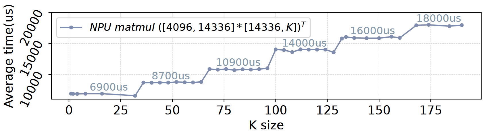
- Fixed Systolic Arrays: NPUs use fixed-size hardware units (e.g., 32x32).
- Misalignment Penalty: Tensors smaller than the hardware unit or not divisible by it require padding.
- Result: Significant performance degradation when tensor shapes do not align with hardware “stages”.
Characterizing Mobile NPUs: Sensitivity
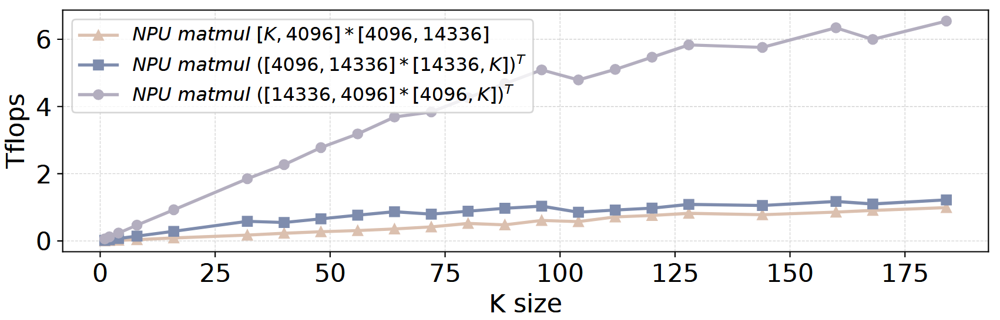
- Order-Sensitive: Performance varies drastically based on tensor order (\([M, N]\) vs \([N, M]\)) due to weight-stall mechanisms.
- Shape-Sensitive: Efficiency depends on the ratio between row and column sizes.
- Implication: Blindly offloading to NPU does not guarantee speedups.
The Memory Bandwidth Bottleneck
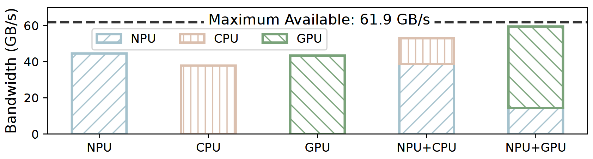
- Underutilized Bandwidth: During decoding (memory-bound), a single CPU, GPU, or NPU only utilizes ~45 GB/s.
- System Potential: The SoC supports ~60 GB/s.
- Opportunity: Concurrent GPU-NPU execution is required to saturate memory bandwidth.
The Synchronization Challenge
- High Overhead: Standard synchronization (e.g.,
clFinish) takes ~400 \(\mu\)s. - Impact: This overhead is comparable to the execution time of individual kernels in LLM inference.
- Result: Naive heterogeneity can degrade performance.
System Design
HeteroInfer Architecture
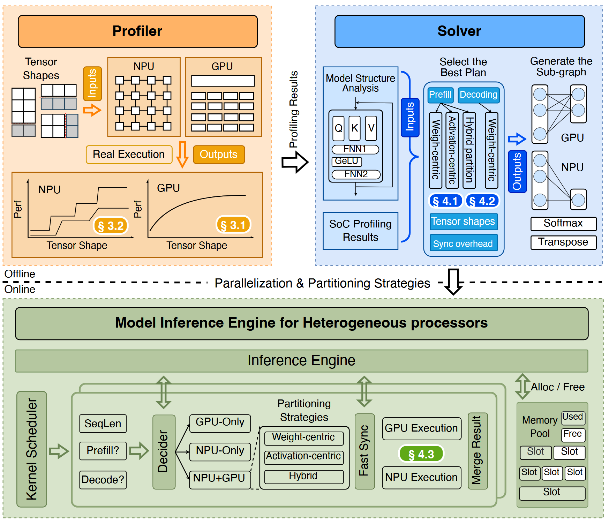
- Offline Phase: Profiler characterizes hardware; Solver determines optimal partitioning.
- Online Phase:
- CPU: Control plane & fast synchronization.
- NPU: Primary compute unit (bulk computation).
- GPU: Secondary compute unit (dynamic shapes & bandwidth booster).
Layer-Level Parallelism
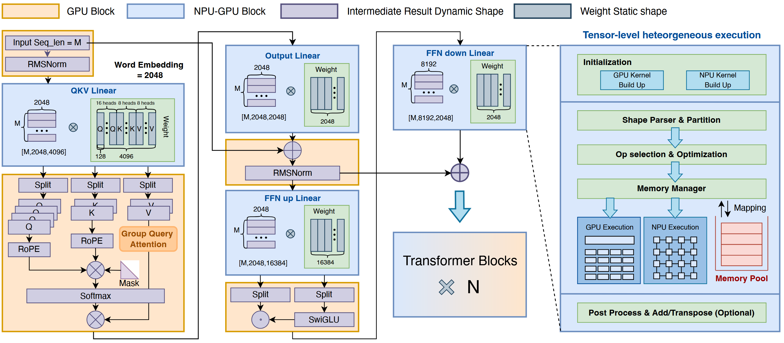
- Affinity-Based Scheduling:
- NPU: Handles heavy Matrix Multiplications (Matmul).
- GPU: Handles non-linear operators (Softmax, RMSNorm) and specific shapes where NPU is inefficient.
- Pipeline: Operators are dispatched to the most suitable backend.
Tensor-Level: Weight-Centric Partition (Decoding)
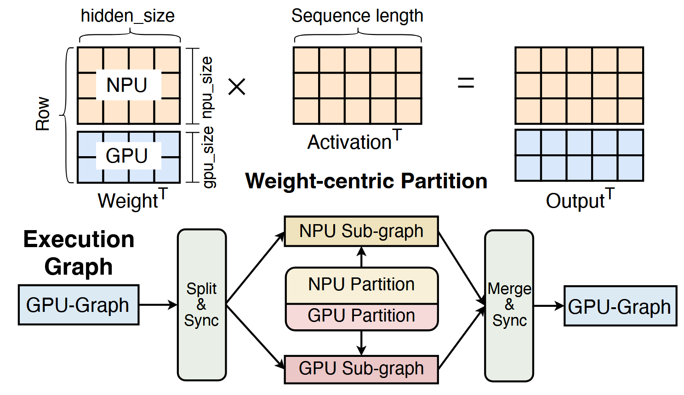
- Goal: Maximize memory bandwidth during the decoding phase.
- Strategy: Partition the weight tensor along the row dimension.
- Execution: GPU and NPU compute partial results on sub-tensors simultaneously.
- Result: Saturates SoC memory bandwidth.
Tensor-Level: Activation-Centric Partition (Prefill)
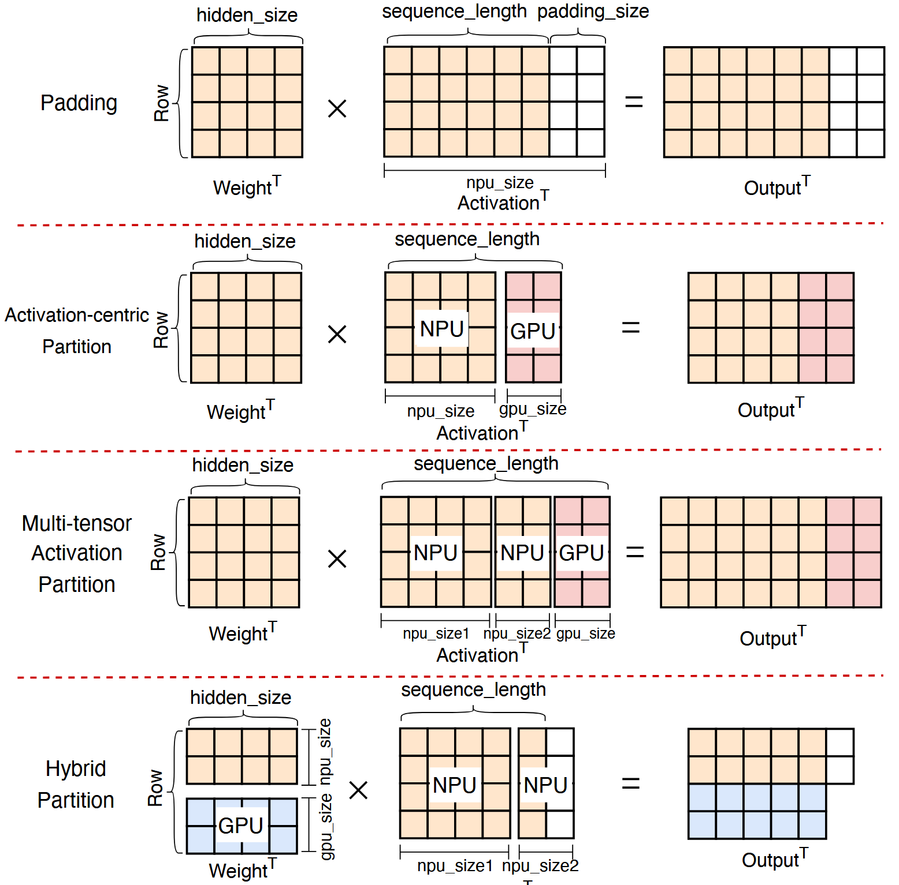
- Problem: Mobile NPUs require static computation graphs. Dynamic input lengths require expensive padding or recompilation.
- Strategy:
- Split input into a fixed standard size (for NPU) and a dynamic remainder (for GPU).
- GPU handles the “odd” shapes efficiently via linear scaling.
Fast Synchronization Mechanism
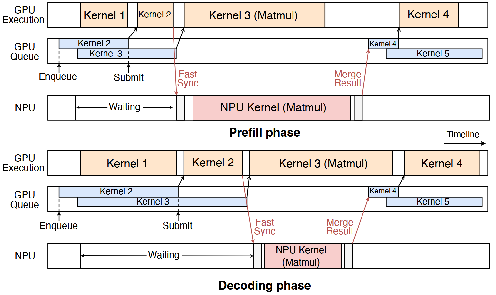
- Leveraging UMA: Zero-copy data sharing via unified memory.
- Predictable Latency:
- Thread sleeps for predicted kernel duration.
- Wakes up and polls a flag bit in shared memory.
- Performance: Reduces synchronization cost from ~400 \(\mu\)s to microseconds.
Evaluation
Experimental Setup
- Platform: Qualcomm Snapdragon 8 Gen 3 & 8 Elite.
- Models: Llama-2/3 (7B/8B), InternLM, etc.
- Baselines:
- CPU: llama.cpp
- GPU: MLC, MNN-OpenCL
- NPU: llm.npu, PowerInfer-2
End-to-End Performance
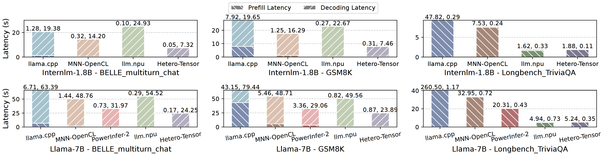
- Speedup: 1.34\(\times\) to 6.02\(\times\) improvement over SOTA frameworks.
- Consistency: Outperforms both GPU-only and NPU-only engines across varying sequence lengths.
Prefill Performance (Compute Bound)
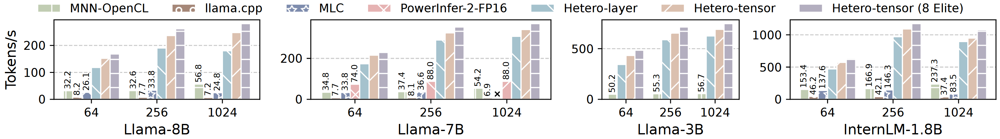
- Dynamic Shapes: HeteroInfer efficiently handles dynamic sequences via activation-centric partitioning.
- Comparison: Up to 24.9\(\times\) faster than CPU and significantly faster than GPU baselines.
Decoding Performance (Memory Bound)
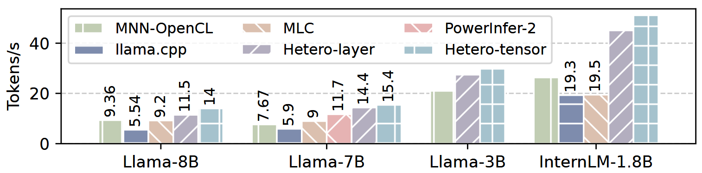
- Bandwidth Saturation: By using GPU and NPU together, HeteroInfer achieves much higher token generation rates.
- Results: >50 tokens/s on InternLM-1.8B; ~14 tokens/s on Llama-8B.
Impact of Fast Synchronization
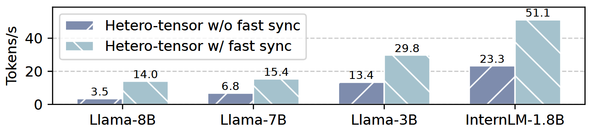
- Criticality: Without fast sync, the overhead negates the benefits of parallelism in the decoding phase.
- Gain: Fast sync enables up to 4.01\(\times\) speedup by tightly coupling GPU and NPU execution.
System Interference
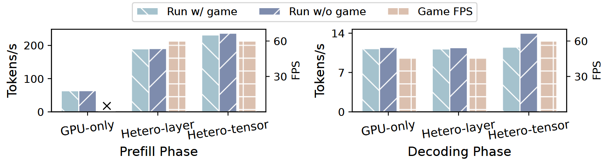
- Scenario: Running LLM inference alongside a heavy mobile game (Wild Rift).
- Result:
- GPU-only engines: Cause severe FPS drops (resource contention).
- HeteroInfer: Maintains stable 60 FPS while delivering high inference speed (offloads bulk to NPU).